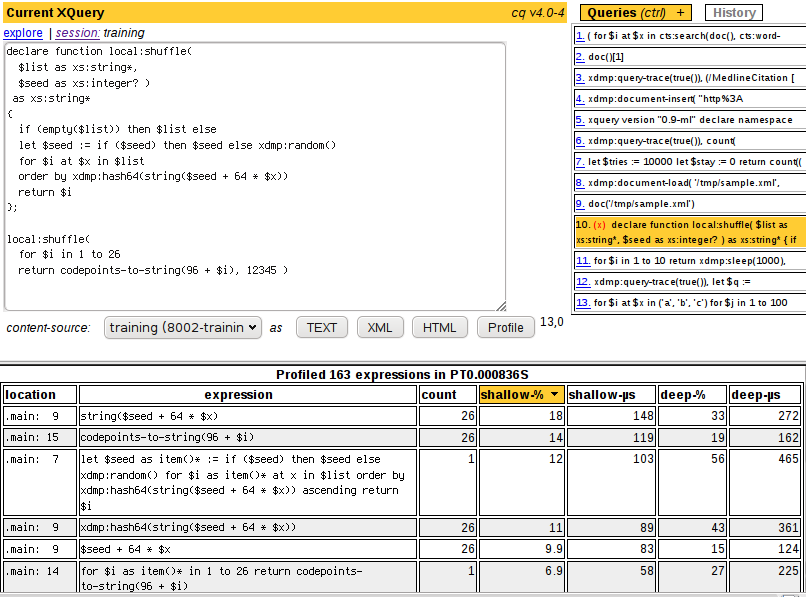

CQ is a web-based XQuery environment. It uses HTML and JavaScript to enable development of ad-hoc queries without using .xqy files. CQ has JavaScript hooks that make it practically an IDE. You can view the results as XHTML, XML, or plain-text output. CQ also supports the MarkLogic Server profiler API.
CQ is designed for use with a MarkLogic Server HTTPServer instance and a modern web browser with JavaScript support and XML display.

The current release of CQ requires MarkLogic Server 4.1-1 or later,
and is distributed with the server as a sample application.
To install CQ, simply
create a new HTTP server with root Samples/cq.
This server can listen on any available port,
and can default to any database you choose.
If you wish to install a development version of CQ,
simply git clone git://github.com/marklogic/cq.git
to a filesystem location that is accessible by your MarkLogic Server instance.
Then create a new HTTP server that uses the same location as its root.
The CQ directory can also be a subdirectory of an existing server.
For example, if you place the files under the
C:\Program Files\MarkLogic\Docs\cq directory,
CQ becomes available at http://localhost:8000/cq/.
If you wish to run CQ from a modules database, simply copy the CQ folder into the desired database. Make certain that the HTTP server module location matches the desired database, and that the HTTP server root matches the URI prefix of the CQ files.
Here are the latest availabled releases of cq for older versions of MarkLogic Server.
Please be very careful in exposing CQ on a production site, as it allows queries to be written by remote clients.
CQ uses the MarkLogic Server security model. To set up CQ for a non-admin user, start by visiting CQ's install-roles.xqy as the admin user. For example, if CQ is installed on port 8000, visit http://localhost:8000/cq/install-roles.xqy with a web browser, and log in as the admin user. This will create four roles:
The cq-sessions and cq-databases roles also inherit the cq-basic role. You may grant any combination of these roles to a user, or simply grant the cq-all role to enable all of CQ's features.
CQ is developed using Mozilla Firefox 3.6, and periodically tested using MS Internet Explorer 7. Other browsers are not tested, and may not work, but patches are welcome.
The CQ source code is included in the download, licensed under the open source Apache 2.0 license. The development source code is available at http://github.com/marklogic/cq. If you make improvements to CQ, please contribute them back to the project.
This application uses code from Prototype.js and script.aculo.us. See js/prototype.js, js/effects.js, and js/controls.js for copyright and license information.
This application uses code, styles, and images from the TableKit demo. See js/tablekit.js for copyright and license information.
This application uses a modified version of Kazuki Ohta's resizable.js. See js/resizable.js for copyright and license information.
This application uses a modified version of Paul Duncan's PersistJS. See js/COPYING-PersistJS for copyright and license information.
Enjoy!